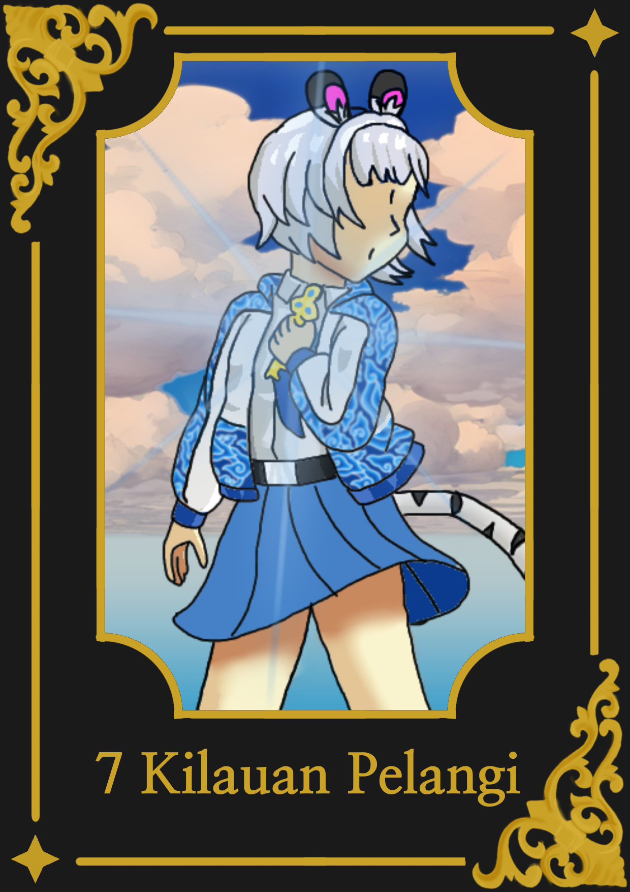

Petualangan Zia Putri di Pandawa Akademi dimulai di sini. Bersiaplah untuk 7 kristal, 7 kesatria, dan 7 rahasia yang mengubah segalanya.
*Untuk suara Bahasa Indonesia terbaik, buka di Chrome Android Atau Cari Suara Indonesia
Namaku Zia Putri.
Di sekolah, aku selalu di panggil si anak aneh. Alasannya sih simpel: aku nggak pernah lepas bando telinga kucing ini dari kepalaku.
"Sok imut banget sih, Zia," ledek mereka.
Memangnya salah ya kalau aku mau jadi diri sendiri? Memangnya aku harus sama kayak mereka gitu biar aku diterima?
Setidaknya, aku masih ada Ibu. Cuma dia yang nerima aku apa adanya. Meski Ibu jarang di rumah karena kerjaan kantornya yang nggak pernah kelar.
Hari pertama sekolah. Males banget.
Mau pura-pura sakit aja. Toh Ibu udah berangkat ngantor dari subuh. Nggak bakal ada yang tahu.
Baru mau rebahan, ada suara "kresek-kresek" dari dapur.
Jantungku berdetak kencang. Maling?!
Aku ngintip. Ternyata Ibu. Lagi bikin sarapan. Masih pakai daster.
"Ibu? Kok belum ngantor?"
Ibu senyum. "Hari ini cuti. Kebetulan kamu belum berangkat. Ibu ada sesuatu buat kamu."
Dia ngeluarin kotak kecil. Isinya kunci emas.
"Ini bakal ubah hidup kamu."
Aku nerima kuncinya sambil melongo. Oke. Entah sejak kapan Ibu yang tiap hari bergelut sama Excel percaya takhayul kayak gini. Aneh banget.
Di perjalanan ke sekolah, aku masih ngedumel soal Ibu yang tiba-tiba percaya takhayul.
Tiba-tiba...
Kunci emas di saku jaketku bergetar. Pelan, lalu makin kencang.
_Ting... ting... TINGGG!_
Cahayanya nyembur. Kuncinya melompat keluar dari saku. Terang banget.
"Hah?!"
Belum sempat teriak, kunci itu melesat. Narik tanganku. Kuat banget.
"Aduh, sakit! Heh, kunci aneh, jangan narik-narik!"
Aku diseret. Lewat trotoar, belok ke gang sempit bau sampah, sampai mentok di tembok jalan buntu penuh coretan pilok.
Di tembok itu, ada lubang kunci kecil. Nggak ada pintunya. Cuma lubang kunci nempel di tembok.
Lubang itu mancarin cahaya keemasan. Sama kayak kunciku. Kayak manggil.
"Aneh banget... kok ada lubang kunci tapi pintunya nggak ada?" gumamku sambil ngos-ngosan.
Tanganku bergerak sendiri. Memasukkan kunci emas ke lubang itu.
_KLEK._
Tembok di depanku retak. Lalu runtuh. Debu tebal langsung nutup pandanganku.
"Uhuk! Uhuk! Aduh, gimana nih?! Apa gara-gara aku temboknya hancur?!"
Setelah debunya menipis, aku melongo. Di baliknya ada kusen dan pintu kayu tua warna biru laut.
Aku mundur tiga langkah. Jantung mau copot.
"Gimana... gimana mungkin? Apa aku mimpi? Dari mana Ibu dapet kunci kayak gini?!"
Pertanyaan numpuk di kepala. Tapi rasa penasaran lebih gede dari takut.
Tanganku gatel. Pengen dorong pintunya.
_Cklek._
Aku buka.
Dan detik itu juga aku nyesel setengah mati.
"KENAPA PINTU INI MINDAHIN AKU KE ATAS AWAN?!?!"
Nggak ada lantai. Di bawah cuma hamparan awan putih dan birunya langit yang bikin pusing. Angin nampar muka. Seragamku berkibar-kibar.
Ini nggak ada di novel fantasi manapun!
Aku jatuh.
Bener-bener terjun bebas. Rok dan jaket ku berkibar.
Pasrah. "Ya udah deh. Kalau mati, semoga nggak sakit. Semoga ini cuma mimpi."
Tutup mata. Tunggu benturan.
Beberapa saat kemudian aku merasa tubuhku sudah sampai tanah tapi.
Kok nggak sakit-sakit amat? Malah anget.
Aku ngintip. Mataku ketemu sisik segede piring. Keras. Hangat.
Aku lagi di punggung sesuatu. Sesuatu yang terbang. Sesuatu yang Gede banget.
Pelan-pelan aku angkat kepala. Aku melihat leher panjang, tanduk,dan napas ngepul kayak asap.
"Hah. Kok aku bisa ada di atas naga?"
Seekor Naga beneran. Naga besar ini lagi terbang santai di atas awan, sambil ngomel-ngomel.
"Hadeh sudah kudugak kau akan terlambat.Kau memang sama cerobohnya seperti dia."
Suaranya berat. Cowok. Nggak serem sihh, tapi... nyebelin.
Jantung kaya mau copot. Dengan sisa nyawa aku ngomong, "A-a-apa? K-kau... bisa bicara?"
Naga itu noleh dikit. Satu mata kuning segede bola basket ngeliatin aku datar.
"Apaan maksudmu? Ya jelas bisa lah. Kau pikir aku ini naga apaan?"
Aku diem. Otak nge-lag. Ini pasti mimpi. Pasti.
Tanganku nyubit pipi sendiri. Kenceng.
"AW, AW, AW, SAKIT!"
Sakitnya nyata. Berarti...
*BERARTI INI BUKAN MIMPI!*
Naga itu ngedengus. Asap tipis keluar dari hidungnya.
"Udah sadar? Bagus. Namaku Runa. Naga agung, penjaga Hastinapura. Dan kau berhutang budi yang besar padaku! Kau menegrti?
Pegangan yang bener. Kita udah mau nyampe."
Nyampe? Nyampe Ke mana?
Aku ngintip ke depan, ngelewatin leher Runa.
Di antara lautan awan, berdiri sebuah kastil. Nggak, bukan kastil. Sekolah. Gedung sekolah raksasa dengan menara-menara tinggi, lapangan luas, dan... bendera warna-warni berkibar. Tujuh warna.
Pikiranku nge-hang. Kunci emas. Pintu. Naga. Sekolah gede bak kastil kerajaan.
Ini "hal mengejutkan" yang Ibu bilang?
Runa mulai nurunin ketinggian. Jantungku mulai berdebar kencang lagi.
"Siap-siap, Zia Putri," kata Runa, nyebut namaku padahal aku belum memperkenalkan diriku. "Selamat datang di Pandawa Akademi Zia Putri"
Saat aku turun, puluhan murid udah berbaris rapi di depanku. Runa langsung ngebut pergi tanpa pamit.
"Surya Kencana!" Suara berat dari belakang bikin aku noleh.
Di depanku, jajaran murid berdiri. Seragamnya mewah. Sepertinya mereka orang penting.
Tunggu. Penampilan mereka aneh banget.
"Hey, kau yang di sana! Cepat masuk barisan!" bentak cowok bertanduk merah.
Aku panik, langsung nyempil ke barisan paling belakang.
"Huh... hari ini bener-bener aneh," gumamku sambil ngos-ngosan.
Tiba-tiba punggungku ditepuk. Kenceng. Sampai hampir jatoh.
"HEY, gadis harimau putih!" cewek bertanduk banteng nyengir lebar. "Kenalan yuk. Namaku Nirmala. Kamu siapa?"
"Eh... Namaku Zia Putri. Tunggu, tadi kamu bilang... harimau putih?"
"Iya, emang kenapa?" jawabnya santai.
"Nggak, kamu salah paham. Ini cuma bando. Lihat, nih—" Aku narik telingaku. "Loh kok nggak bisa lepas?! Aw! Makin ditarik makin sakit!"
Nirmala ngak. "Kamu kenapa sih? Itu emang telingamu. Kok bisa lupa? Aneh banget."
Aku melongo. "Aneh sekali... kok bisa gini?"
"ZIA PUTRI!" Suara dari depan bikin kami diem.
Nirmala nyikut aku. "Tuh, Ketua OSIS manggil kamu. Angkat tangan!"
"Oh. A-Aku hadir!" teriakku gugup.
"Baik. Semua murid sudah diabsen," suara Ketua OSIS tegas. "Dengan ini, kalian resmi jadi bagian dari keluarga besar Pandawa Akademi."
Dia berhenti sebentar. Matanya nyorot tepat ke arahku.
"Besok semua siswa wajib hadir tepat waktu. Kami tidak mentolerir keterlambatan... lagi."
Nirmala cekikikan. "Hihi, sepertinya dia nyindir kamu."
Pipiku langsung panas. "Diem deh kamu."
Suka ceritanya? Traktir penulis secangkir kopi biar kuat nulis chapter selanjutnya☕
Traktir Kopi ☕